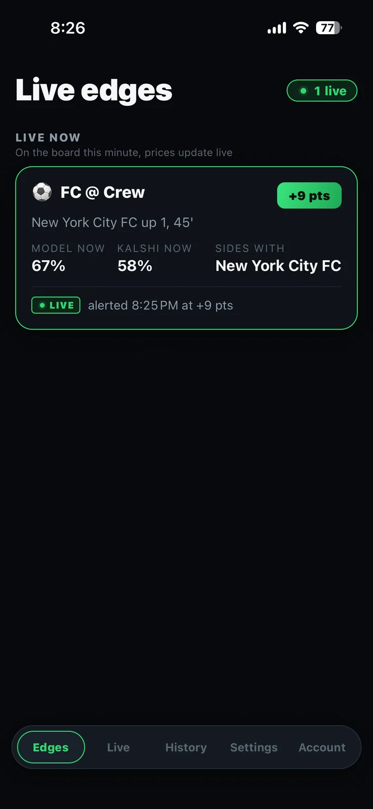
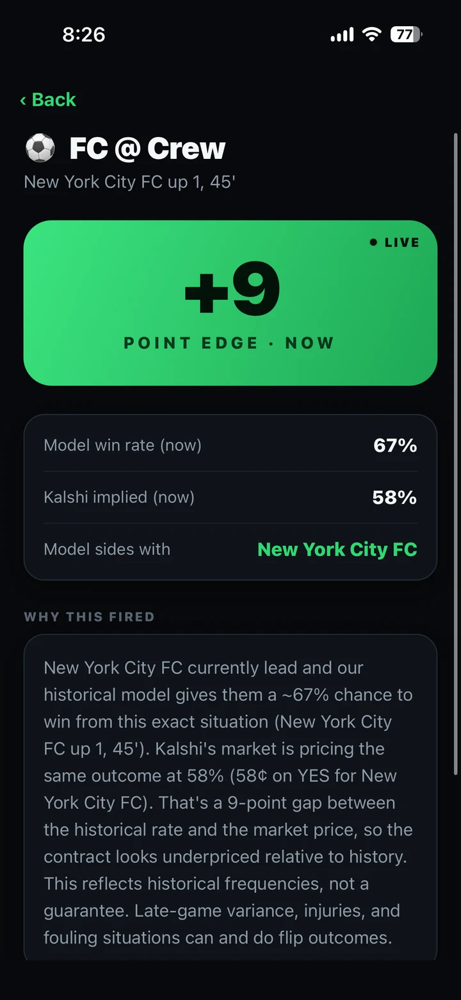

Deviate
An iOS app that alerts users when my win-probability models diverge from live Kalshi prices.

From game state to an alert
I built Deviate to answer a question during a game. How far apart are my model’s estimate and the price on Kalshi? My models estimate win probability from the current game state. The app compares the two estimates and alerts users when they diverge.
Keeping a record
A Python service on Railway refreshes game states, market prices, and model outputs at different intervals. The platform has evaluated 500+ games, monitored 600+ markets, and recorded thousands of results so I can revisit predictions after the game.
Inside the app



